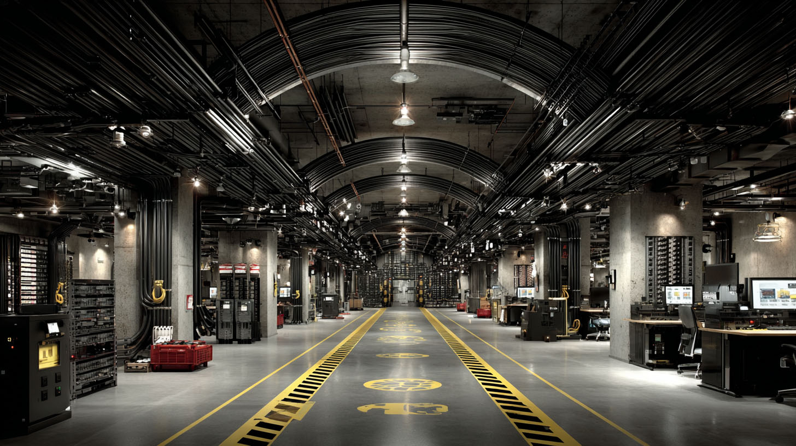

Commercial Data & Fiber Optics
Providing high-capacity structural cabling for Sydney's premier commercial developments since 2010. Fully licensed, CFMEU affiliated, and safety compliant.
Our Services:
- Cat6 & Fiber Optic Backbone Installation
- Server Room Fit-outs
- Underfloor & Riser Cabling
> INTERNAL WORK LOG // JAI // OBSIDIAN TOWER SITE
> DATE: 14 NOV 2025
> NOTES: Ran the primary trunks to Sub-Basement 4. The blueprints say it's an HVAC pump room. The power draw says it's a massive localized data center. I saw the server racks—they are trying to route all local ISP traffic through their own nodes.
> ACTION TAKEN: Spliced the primary heat sensors for the cooling loop into a dead circuit. When they run the servers at 100%, the cooling won't trigger. It's going to melt down from the inside out. Sealed the drywall. Nobody saw.